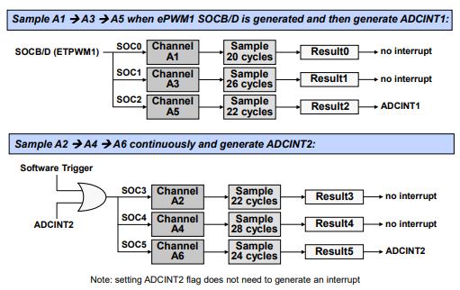

Analog-to-Digital Converter (ADC)#
C2000 devices support multiple analog-to-digital converters (ADCs) in 12-bit mode and/or 16-bit mode. Each ADC module has a single sample-and-hold (S/H) circuit and using multiple ADC modules enables simultaneous sampling or independent operation (sequential sampling). The ADC module is implemented using a successive approximation (SAR) type ADC.
ADC Module
Not all C2000 devices have the same ADC type or capabilities. Refer to the Peripheral Reference Guide to find your specific device’s ADC type and feature set.
Differential Signal Mode#
In this mode, a pair of pins (positive input ADCINxP and negative input ADCINxN) are sampled and the input applied to the converter is the difference between the two pins (ADCINxP – ADCINxN). A benefit of differential signaling mode is the ability to cancel noise that may be introduced common to both inputs.
Single-Ended Signal Mode#
In single-ended mode, a single pin (ADCINx) is sampled and applied to the input of the converter.
Start of Conversion (SOC)#
The ADC triggering and conversion sequencing is managed by a series of start-of-conversion (SOCx) configuration registers.
Each SOCx register configures a single channel conversion, where the SOCx register specifies the trigger source that starts the conversion, the channel to convert, and the acquisition sample window duration.
Multiple SOCx registers can be configured for the same trigger, channel, and/or acquisition window. Configuring multiple SOCx registers to use the same trigger will cause that trigger to perform a sequence of conversions, and configuring multiple SOCx registers for the same trigger and channel can oversample the signal.
The various trigger sources that can be used to start an ADC conversion include the General Purpose Timers, the ePWM modules, an external pin, and by software. Also, the flag setting of either ADCINT1 or ADCINT2 can be configured as a trigger source which can be used for continuous conversion operation.
The ADC interrupt logic can generate up to four interrupts. The results for SOC 0 through 15 appear in result registers 0 through 15, respectively.
Note:
The diagram above is for the F28004x, other devices might have different trigger sources. Please refer to the ‘ADC Triggering’ section of this module for more information.
The figure above is a conceptual view highlighting a single ADC start-of-conversion functional flow from triggering to interrupt generation. This figure is replicated 16 times and the Driverlib functions highlight the sections that they modify.
ADC Triggering#
Trigger Sources:
As discussed previously, each ADC module has multiple trigger sources that can be used to initiate an ADC conversion. For a complete list of trigger sources please reference the ‘ADC Triggering’ section of the TRM.
Point about triggering:
There is fine granularity and coupling for when the ADC conversion can be sampled vs the control loop (especially with an EPWM-trigger + EPWM-actuation scheme), which is convenient for avoiding noise and optimizing response times (phase margin).
Parallel ADCs allow for true simultaneous sampling, which is good for correlated signals (like Voltage + Current for a power supply)
The sampling rate is software configurable, so the ADC sampling can be adjusted on-the-fly to match the input signal
Triggering Examples#
The top example shows channels A1, A3, and A5 being converted with a trigger from EPWM1. After A5 is converted, ADCINT1 is generated.
The bottom example shows channels A2, A4, and A6 being converted initially by a software trigger. Then, after A6 is converted, ADCINT2 is generated and also fed back as a trigger to start the process again.

The ADC ping-pong triggering example shows channels B0 through B5 being converted, triggered initially by software. After channel B2 is converted, ADCINT1 is generated, which also triggers channel B3. After channel B5 is converted, ADCINT2 is generated and is also fed back to start the process again from the beginning. Additionally, ADCINT1 and ADCINT2 are being used to manage the ping-pong interrupts for the interrupt service routines.
ADC Conversion Priority#
When multiple triggers are received at the same time, the ADC conversion priority determines the order in which they are converted.
Three different priority modes are supported. Lets take a look at each:
Round Robin Priority (default)#
No SOC has an inherent higher priority than another
Priority depends on the round robin pointer which operates in a circular buffer
High Priority#
High priority SOC will interrupt the round robin wheel after current conversion completes and insert itself as the next conversion
One or more than one SOC can be assigned as ‘high priority’
High priority mode is assigned first to the lower number start-of-conversion and then in increasing numerical order.
If two high priority start-of-conversion triggers occur at the same time, the lower number will take precedence.
After its conversion completes, the round robin wheel will continue where it was interrupted
Round Robin Burst Mode#
Allows a single trigger to convert one or more SOCs in the round robin wheel
Uses BURSTTRIG instead of TRIGSEL for all round robin SOCs (not high priority) to select the burst size and trigger source
In the ADC Conversion Priority Functional Diagram, the Start-of-Conversion Priority Control Register contains two bit fields. The Start-of-Conversion Priority bit fields determine the cutoff point between high priority and round robin mode, whereas the Round-Robin Pointer bit fields contains the last converted round robin start-of-conversion which determines the order of conversions.
The Round-Robin Burst mode utilizes an ADC Burst Control Register to enable the burst mode, determine the burst size, and select the burst trigger source.
Post Processing Block#
To further enhance the capabilities of the ADC, each ADC module incorporates post processing blocks (PPBs), and each PPB can be linked to any of the ADC result registers (ADCRESULTx). The PPBs can be used for offset correction, calculating an error from a set-point, detecting a limit and zero-crossing, and capturing a trigger-to-sample delay.
1.Offset Correction
Simultaneously remove an offset associated with an ADCIN channel possibly caused by external sensors and signal sources (zero-overhead; saving cycles)
2.Error from Set-point Calculation
Subtract out a reference value which can be used to automatically calculate an error from a set-point or expected value (reduces the sample to output latency and software overhead)
3.Limit and Zero-Crossing Detection
Automatically perform a check against a high/low limit or zero- crossing and can generate a trip to the ePWM and/or an interrupt (decreases the sample to ePWM latency and reduces software overhead; trip the ePWM based on an out of range ADC conversion without CPU intervention) which is useful for safety cautious applications.
4.Trigger-to-Sample Delay Capture
Capable of recording the delay between when the SOC is triggered and when it begins to be sampled (allows software techniques to reduce the delay error)
5.Post Processing Block Interrupt Event
Each ADC module contains Post Processing Blocks
Each Post Processing Block can be associated with any of the 16 ADCRESULTx registers
ADC Clocking Flow#
In order to configure the clock for the ADC module, first the SYSCLK needs to be
generated. This clock is the CPU frequency and is configured through the
SysCtl_setClock() function. This function lets you choose the input clock
source and configure the PLL settings. Once the SYSCLK is setup, the clock to
each ADC module used must be enabled using the SysCtl_enablePeripheral()
function. Upon enabling the clock, a prescalar value can be selected
through the ADC_setPrescaler() function that will scale down the SYSCLK
frequency to go to the ADC core. Make sure to check the datasheet for the MAX
ADC frequency, this is lower than SYSCLK.
Example of configuring the clock settings for a device
Note:
The values in this example may not apply to all devices but the flow will be the same.
ADC Timing#
Below is an example of how to calculate the maximum sampling rate. For this
example, SYSCLK is 100MHz (10ns period) and ADCCLK is 50MHz (20ns period)
Sample + Hold (sampling window) time: 8 * 10 ns = 80 ns
Conversion time: 21 * 10 ns = 210 ns
Sampling Rate: 80 ns + 210 ns = 290 ns ->3.45 MSPS (Mega samples per second)
ADC Conversion Result Registers#
The ADC conversion results are stored within the ADCRESULTx register. The
ADC_readResult() function can be utilized to read the result given an ADC
module and SOC number.
Selectable internal reference of 2.5 V or 3.3 V (Not available on multi-core devices)
Ratiometric external reference set by VREFHI/VREFLO
Note:
The table above is based on internal reference of 3.3 V; for external reference VREFHI is VDDA maximum, however VREFHI is typically selected as 2.5 V or 3.0 V
ADC Calibration and Reference#
Built-In Calibration#
TI reserved OTP contains device specific calibration data for the ADC, internal oscillators and buffered DAC
The Boot ROM contains a Device_cal() routine that copies the calibration data to their respective registers
Device_cal() must be run to meet the specifications in the datasheet
The Bootloader automatically calls Device_cal() such that no action is normally required by the user
If the Bootloader is bypassed (e.g. during development) Device_cal () should be called by the application:
The Device_cal() function is called by the SysCtl_deviceCal() function
within the sysctl.h file which is called by the Device_init() function. The
Device_init() function is found within device.c. This is what C2000Ware
examples utilize to initialize the device.
Manual ADC Calibration#
If the offset and gain errors in the datasheet are unacceptable for your application, or you want to also compensate for board level errors (e.g. sensor or amplifier offset), you can manually calibrate
Offset error (12-bit mode)
Compensated in analog with the ADCOFFTRIM register
No reduction in full-scale range
Configure input to VREFLO, set ADCOFFTRIM to maximum offset error, and take a reading
Re-adjust ADCOFFTRIM to make result zero
Gain error
Compensated in software
Some loss in full-scale range
Requires use of a second ADC input pin and an upper-range reference voltage on that pin
Analog Subsystem External Reference#
Setting up an External Reference
For an example of how to setup an external reference refer to the ‘Designing an External Reference Circuit’ section within the device’s Technical Reference Manual (TRM).
The following image shows an example of the reference generation scheme for the F28004x device:
Resources#
Feedback
Please provide any feedback you may have about the content within C2000 Academy to: c2000_academy_feedback@list.ti.com